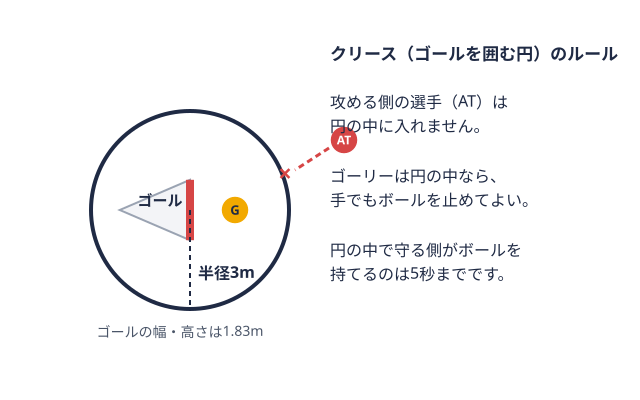
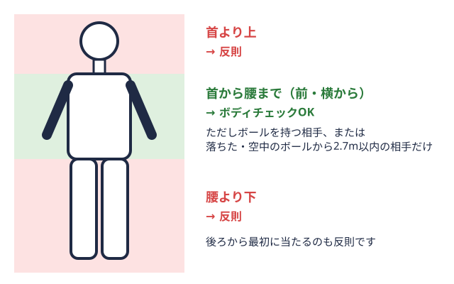
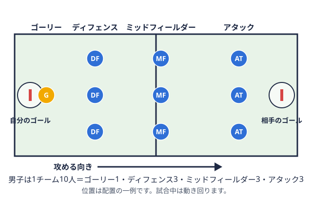
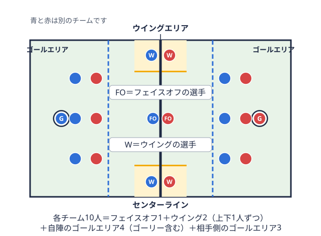
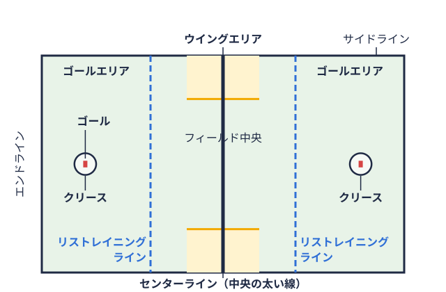
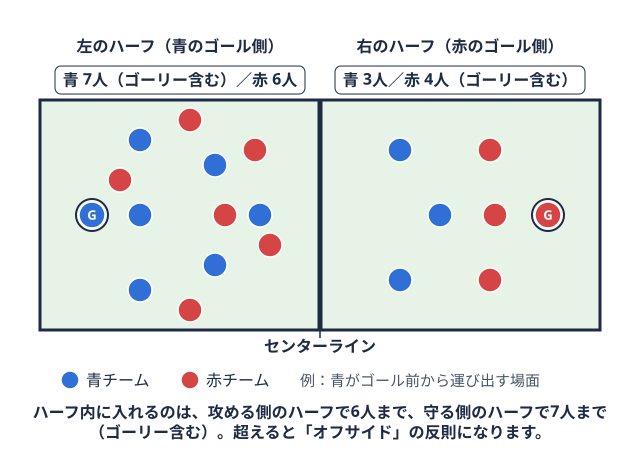

大会ガイド 2026-08-31
ラクロス観戦ガイド｜大学の試合は多くが無料、見どころとマナー
はじめての方向け
この記事の内容
チケットは必要？ 基本は入場無料、注目カードは有料の場合も「大学ラクロスの試合を観に行ってみたいけれど、チケットは要るのか、何を見ればいいのかわからない」という声は少なくありません。結論から言うと、JLA（公益社団法人日本ラクロス協会）は「試合の観戦は基本的に無料でチケット等はない」と案内しており、多くの試合は入場無料で観られます。一方で、開幕戦や決勝戦などの大きな試合ではチケットが必要になる場合があるため、観に行く試合ごとの確認が欠かせません。この記事では、JLAの公開情報をもとに、初めて観戦する人向けにチケット、見どころ、撮影ルール、応援マナーを整理しました。ルールを知らない方でも読めるよう、用語はその都度説明しています。
チケットは必要？ 基本は入場無料、注目カードは有料の場合も
JLAの観戦ガイドには、試合の観戦は基本的に無料でチケット等はないものの、大きな試合の場合はチケットが必要な場合がある、と書かれています。大学のリーグ戦は会場が大学のグラウンドであることも多く、ふらっと立ち寄って観戦できる手軽さも魅力のひとつです。
無料の試合／有料の試合／確認先
| 区分 | 内容の目安 | 確認先 |
|---|---|---|
| 無料の試合 | チケット情報が出ていない試合。JLAは「基本的に会場に行けば試合をご覧になることができます」と案内 | 大会の日程ページ、各チームの公式発信 |
| 有料の試合 | 開幕戦・決勝戦など大きな試合で、チケットが必要になる場合がある。購入はPeatixで案内される例がある | JLAのお知らせ（大会告知ページ）、Peatixの販売ページ |
| 判断に迷うとき | チケット情報が見当たらない場合は、各チームへ問い合わせる | 応援したい大学・チームの公式サイトやSNS |
観に行きたい試合が決まったら、まず大会の告知ページでチケット情報の有無を確認し、情報がなければ会場で観戦できるのが基本、迷ったら各チームに問い合わせる、という順番で調べると安心です。
有料試合の価格の例
有料試合の一例として、2026年度の第38回関東学生ラクロスリーグ戦の決勝戦（2026年10月31日、東京・駒沢オリンピック公園第二球技場）では、前売券1,100円（税込）・当日券1,600円（税込）、中学生以下は無料とJLAが告知しています。前売券はPeatixで購入でき、販売期間は10月20日から10月30日23:59までと案内されています。また同決勝戦では、高校生向けの無料招待キャンペーンも告知されています。
開幕戦については、本稿の執筆時点で第38回の告知を確認できていません。参考までに2025年度の第37回の開幕戦・決勝戦も、同じ前売券1,100円・当日券1,600円（いずれも税込）、中学生以下無料でした。価格や販売方法は大会ごとに変わるため、必ず最新の公式告知で確認してください。
現地に行けない場合は、JLAが案内する配信サービス「Japan Lacrosse Live」で、日本代表戦や各地区のリーグ戦、大学選手権、クラブ選手権、全日本選手権などの試合をオンライン観戦できます。どの試合が配信されるかは大会ごとに異なるため、こちらも事前に確認しましょう。
会場とスケジュールの調べ方
大学ラクロスは全国7地区・男女14リーグで並行してシーズンが進むため、応援したい大学がどの地区・どの部に所属しているかを先に把握しておくとスムーズです。本サイトでは大学ラクロスリーグ戦の仕組みで部・ブロックの構成を解説しているほか、各地区の試合結果・日程を毎日自動更新でまとめています。会場・キックオフ時刻は大会ごとに変わるため、直前まで公式発表を確認するのが確実です。リーグ戦のあとに続く学生日本一決定戦も観戦できるので、ラクロス全日本大学選手権大会とは？ 出場校の決まり方とトーナメント方式で大会の流れを先に押さえておくと、日程を組みやすくなります。
試合の基本を押さえる
JLAの観戦ガイドによると、ラクロスは男女ともに1チーム10人で構成され、試合は15分×4クォーターで行われます。10人のうち1人はゴールを守るゴーリーゴールを守る専任の選手。ゴールを囲む円（クリース）の中では、手でもボールを止められる。  用語辞典で見る（スティック）でボールを運び、パスをつなぎ、ゴールを狙います。
用語辞典で見る（スティック）でボールを運び、パスをつなぎ、ゴールを狙います。
男女で使うルールや道具には違いがあり、同じ「ラクロス」でも見え方がかなり変わります。違いの全体像は男子ラクロスと女子ラクロスの違いで詳しく比べているので、観戦前に目を通しておくと理解が深まります。ここでは観戦に直結するポイントだけ紹介します。
男女別の見どころ
男子ラクロスの見どころ
JLAは男子の見どころとして、迫力あるボディチェック男子で、ボールを持つ相手などに体を当てて止める行為。首から腰までの前・横からだけ認められる。 
もうひとつは、反則が出たときの「マンアップオフェンス」です。反則をした側の選手が一定時間退場し、攻撃側が人数で上回る状況になるため、一気に得点チャンスが広がり、試合の流れを左右する場面になるとJLAは説明しています。得点の入り方が変わる瞬間なので、笛が鳴ったあとの展開に注目してみてください。
そして、走りながらのシュートと1対1の勝負も男子の醍醐味です。ディフェンス主に自陣のゴール近くで、相手のシュートを防ぎボールを奪う選手。男子は3人。 
女子ラクロスの見どころ
女子は、スピード感のあるパスワークとクロスワークが魅力です。JLAによると、攻撃は速攻（ファーストブレイク）とセットプレー（遅攻）の2つが中心になります。
速攻の起点になりやすいのが、ゴーリーのセーブ後の素早いロングパスです。ゴーリーには俊敏性と判断力が求められると紹介されており、守りから一気に攻めに転じる流れを追うと面白さがわかります。セットプレーでは、パスを回しながら守備を崩していく連携や、個人で突破する場面に注目すると楽しめます。
フェイスオフとドロー
試合開始や得点後に行うボールの取り合いを、男子は「フェイスオフ男子の試合開始や得点後に、センターで2人が向かい合ってボールを奪い合う再開方法。 
初めてでも楽しめる観戦の見どころ
点が入りやすく、試合展開がスピーディ
ラクロスはサッカーのような1桁台のロースコアで終わることが少なく、1試合で二桁得点が入ることも珍しくありません。攻守の切り替えが速く、ゴールシーンも多いため、ルールを完全に理解していなくても展開を追いやすいスポーツです。
スティックワークとスピード感
クロス（スティック）を使ったパス・キャッチ・シュートの技術は、ラクロスならではの見どころです。走りながらのロングパスや、ゴール前での鋭いシュートモーションは、実際に観に行くと映像以上の迫力があります。
「リストレイニングライン」を知るとオフサイドがわかる
JLAの観戦ガイドでは、「リストレイニングラインゴール前方に引かれた横線で、その奥がゴールエリア。男子の試合再開（センターでのボール争い）の開始時、奥の選手は動きが制限される。  
男子の人数制限は、センターラインコートの中央を横切る太い線。試合再開のボール争いを行う場所で、人数制限（オフサイド）の境目にもなる。用語辞典で見るで分けた半分ずつで数えます。攻める側のハーフには6人まで、守る側のハーフにはゴーリーを含めて7人（ゴーリー以外なら6人）までしか入れません。
あわせて、コートの主な線と区画の位置も確認しておきましょう。
観戦中にわからない用語が出てきたときは、ラクロス用語集で意味を調べられます。ベンチやスタンドの会話でもよく使われる言葉がまとまっているので、スマートフォンで開いておくと便利です。
撮影ルールと注意点
JLAによると、個人利用の範囲であれば、多くの大会で撮影が可能です。ただし、三脚や望遠レンズを使う場合や、撮影した写真・動画をSNSに投稿する場合は、大会や会場のルールに従う必要があります。
観戦席が混み合う会場では、三脚が周囲の視界や通路を妨げることがあります。また、選手は学生が中心なので、投稿する際は本人や周囲の観客が写り込むことにも配慮したいところです。不安な場合は、事前に大会の注意事項を確認するか、当日の会場スタッフに尋ねてください。
応援のマナーと当日の持ち物
大学ラクロスの応援は、拍手や声援が基本です。特別な応援ルールがあるわけではなく、ナイスプレーに素直に声をかける、得点シーンで拍手を送るといった一般的なスポーツ観戦のマナーで問題ありません。チームカラーのタオルや旗を持参して応援する観戦者も見られます。
会場は屋外の大学グラウンドであることが多いため、季節に応じた防寒・日除け対策は必須です。大会によっては、後方の観戦者の視界を妨げないよう傘の使用を控えレインコートの着用を呼びかけている例もあります。長時間の観戦になる場合は、折りたたみ椅子やレジャーシートがあると快適に過ごせます。
ラクロス観戦のよくある質問
大学ラクロスの観戦は無料ですか？
JLAは、試合の観戦は基本的に無料でチケット等はないと案内しています。ただし、開幕戦や決勝戦など大きな試合ではチケットが必要な場合があり、その場合はPeatixで販売される例があります。事前に大会の告知を確認してください。
試合の撮影はできますか？
個人利用の範囲であれば、多くの大会で撮影可能とされています。三脚や望遠レンズの使用、SNSへの投稿は、大会や会場のルールに従ってください。
ルールを知らなくても楽しめますか？
楽しめます。得点が入りやすく攻守の切り替えも速いため、展開を追いやすい競技です。まずは男女とも10人制で15分×4クォーターという基本と、試合開始や得点後のフェイスオフ／ドローに注目すると、流れをつかみやすくなります。
学生リーグとクラブリーグの違いは何ですか？
学生リーグは大学の部が所属して戦うリーグ戦で、本サイトが主に扱っているのはこちらです。JLAは学生の大会のほかに、全日本クラブ選手権大会のようなクラブチームの大会も開催しています。出場チームの区分が異なるため、観戦前にどの大会かを確認すると、チケットの有無や会場も調べやすくなります。
試合の配信はありますか？
JLAが案内する「Japan Lacrosse Live」で、日本代表戦や各地区のリーグ戦、大学選手権、クラブ選手権、全日本選手権などをオンライン観戦できます。配信される試合は大会ごとに異なります。
まとめ
大学ラクロスの観戦は、多くの試合が入場無料で気軽に足を運べる一方、注目カードでは事前のチケット確認が必要になることもあります。会場とスケジュールを事前に調べ、男女10人制・15分×4クォーターの基本、フェイスオフ／ドロー、リストレイニングラインなど最低限のポイントを押さえておけば、初めてでもスピーディな展開と豪快なゴールシーンを十分に楽しめるはずです。撮影やSNS投稿は大会ごとのルールに従い、気持ちよく応援しましょう。本サイトの各地区の順位表・試合結果も参考に、気になる大学の試合を見つけてみてください。
出典
このチーム・この競技を応援したい方へ
ツナカレでは大学の部活・団体への協賛先を探せます。
取材してほしい部活を募集中
頑張っている部活・団体を、ツナカレ運営メディアが取材でご紹介します。
オフシーズン・引退後に、長期インターンという選択
部活で培った力を実務で試す。16タイプ診断（30秒）で合う企業がわかります。